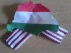

Nem vagyok túl nagy
levrovszerkesztõ, valahogyan nem szeretem a nem kifejezetten nekem szóló üzenetek olvasgatásait. Túl
sok remek ötletet küldenek (persze azért, hogy mi valósítsuk meg, mintha csak mi léteznénk), túl
sok lecsesztést kapunk (mert mindent rosszul csinálunk, azért is van itt ez az oldal, bizonyára),
illetve az injekciósok a levélküldés módját ügyesen megtalálták. Az egyhetes szünetemkor sok
e-mailt kaptam, azóta pedig talán még többet: néhányan talán mégis örülnek neki, hogy írok,
úgyhogy kéjesen vihogok bele az engem szapulók visszataszító, bûzlõ képébe, hogy bibibí és hahaha.
Cserébe péntektõl máig kiválogattam néhány levelet szinte véletlenszerûen, és azt mondom rájuk,
hogy elolvastam õket.
A levelezés és a kétoldalú
kommunikáció szellemisége miatt a hozzászólás lehetõségét ennél a bejegyzésnél
engedélyezem.KeXY írta:Kedves Blogin, Tomcat és a többiek!
Szeretnék nektek ezúton köszönetet mondani, amiért vagytok, és teszitek, amit tesztek. Az
életemben nagyon sok változás köszöntött be tavaly nyár vége óta, mióta a bombagyár mûködésnek
indult. Nem csak a szememet nyitottátok fel, hanem igen sok emberséget is tanultam Tõletek.
Szeretném, ha még sokáig tudnátok azok maradni, akik, és még jobban szeretném, hogy emberség
tekintetében még több ember tanulhasson Tõletek.
Habár rengeteget változtam, a
környezetem még mindig ugyanolyan, mint volt. Én sem tettem ez ellen szinte semmit, inkább a
csendes szemlélõ szerepét választottam eddig mindig, megfigyeltem a környezetem és levontam a
következtetéseket. Az utóbbi hetekben a bennem levõ feszültség mégis túlfeszített, és elértem egy
olyan pontig, ahol kivetkõztem magamból, és végre levetkõztem ezt a csendes viselkedésemet.
A barátnõmmel elkezdünk szervezni egy baráti kört, ahol a környéken élõ hasonlóan
radikálisan gondolkodó embereket tömörítjük mi is egy közösségbe. A szemétgyûjtésen és túrázáson
túl még sok dolog van tervbe véve, például a számotokra valószínûleg nagy segítséget jelentõ
közösségi munkák, cikkek fordítása, videók feliratozása, valamint ismeretterjesztõ, oktató
elõadások szervezése, természetvédelem stb.
Sok energiánkat bele fogjuk tenni. Már
vagyunk is néhányan, akik hiszünk egymásban és a Haza feltámadásában. Adja az Isten, hogy még
sokáig jó erõben és egészségben éljetek, minden jót kívánok Nektek és magunknak!
Még
egyszer köszönet mindenért!
Szebb jövõt!
Hargitai Dávid
Köszönjük, néha
nagyon kell egy ilyen levél. Sokat kaptam/kaptunk az elmúlt idõszakban, mindenkinek köszönjük,
hogy jó arcnak tartotok.
Robi írta:Blogin "Kokárda fekete szalaggal" címû postjával kapcsolatban:
Ez igenjó ötlet,
én is hordani fogom itt Kolozsváron, és közlöm ezt minden hozzám hasonló gondolkodású barátommal,
úgy Kolozsváron, mint szülõvárosomban, Nagyszalontán. Igazán jó érzéssel tölt el, hogy soksok ember
van még, aki nem hány fittyet erre gyászos eseményre. Köszönöm. Tisztelettel: Róbert.
Sokan írtatok
legújabb
javaslatommal kapcsolatban. A levelekben mindenki azt írta, hogy használni fog egy ilyen
gyászkokárdát (ha pedig ezelõtt is használt már ilyesmit, mint például Mázlista, aki a mellékelt
képen látható emlékkokárdát szokta fölvenni ilyen alkalmakra), ennek ellenére nagyjából ugyanannyian
mondták, hogy még ennyire sem képesek június negyedikén, mint ahányan esküdtek a feketeszalagos
kokárdára: körülbelül 750-en. Vajon ezek az emberek miért olvasnak bennünket? Ezért tényleg nem kell
sokat tenni, nem kell megmozdulni, kockáztatni, pénzt adni. No, nem baj, így is leszünk legalább
ezren, akik így tesznek.
DeluksZ írta:Szevasztok.
Nem tudom mennyire foglalkoztok Tóta W. legújabb prodzsektjeivel, a
Modern Képmesékkel. Nem kifejezetten ástam bele magam a dologba, sõt, azt kell mondjam a legtöbb,
amit láttam, hasznosnak bizonyult. A legutolsó (#79) alkotás viszont megdöbbentett. 100% globalista
propaganda, megfejelve néhány nehezen félreérthetõ utalással a Trianoni diktátummal, és a
kuruc.info-val kapcsolatban. Nem tudtam eldönteni, hogy sírjak vagy nevessek, miközben nézem.
Gyakorlatilag minden egyes mondat kétértelmû, és azt hiszem ti is tökéletesen érzitek a mögöttes
utalást és tartalmat.
[LINK] (ha rossz a link, akkor a 79.
- Jöjjön el a mi országunk c. alkotást keressétek.)
Amennyiben nem óhajtotok vele
foglalkozni, vagy már láttátok, úgy elnézést az idõtökért.
A sorozatnak azóta vége. Az
adómilliókból készült agymosoda volt a végsõ lökés
Worluknak: miután közvetlenül a kormánytól
kapta a kenyerét, a megélhetésért cserébe a stílusát is megölte, és már üres, ostoba szélsõbaloldali
locsogássá váltotta korábbi cinikus önmagát.
nektek:) írta:"57/2008. (III. 15.) KE határozat
kitüntetés adományozásáról
Az Alkotmány
30/A. § (1) bekezdése j) pontja, valamint a Magyar Köztársaság kitüntetéseirôl szóló 1991. évi XXXI.
törvény 2. § (1) bekezdése alapján a miniszterelnök elôterjesztésére
kitüntetést
adományozom.
KEH ügyszám: VIII-1/01121/2008.
...
társadalmi-közéleti
tevékenysége elismeréseként
Szekeres István nyugalmazott dandártábornoknak, a Magyar Ellenállók
és Antifasiszták Szövetsége alelnökének,
...
a
MAGYAR KÖZTÁRSASÁGI
ÉRDEMREND
LOVAGKERESZTJE
(katonai tagozat)
kitüntetést adományozom.
KEH
ügyszám: VIII-1/01121/2008."
Egyébként az tudod-é, hogy a MEASZ mint "Egyéb
közérdekû feladatokat ellátó szervezet" minden évben a rendszerváltás óta több milliót kap a
központi költségvetésbõl?
MEASZ... –
emlékszünk, ugye?
Tisztitótûz
írta:ÚJ HAJNAL!
Tisztelt Szerkesztõség!Kérem
közöljék az alábbi levelet.
Nemzetünk utolsó napjait éljük.A fekete dögvész minden nap
legalább egy halálos áldozatot szed,az utcára már nem lehet kimenni fegyver nélkül és nyugodt
szívvel.
A sötét szörnyetegek élvezettel erõszakolják meg lányainkat ölik meg fiainkat és senki
nem véd meg minket. Vidéken a magyar lakosságot a cigánymaffia terrorizálja és tartja rettegésben.
Idõseket, nõket és gyerekeket vernek össze vagy akár ölnek meg hordákban a káosz mocskos
szolgái.Bemennek házainkba és kifosztanak. Meggyalázzák szobrainkat,és ócskavasként eladják,hogy
szennyes fajukat fentarthassák.
Elég volt.Vége van.
Én végleg elhatároztam magam. Ez
a döntés sokáig érlelõdött bennem, de a mai napon megtörtént gyilkosság és a tegnap elõtti nemi
erõszak híre végleges elhatározásra sarkallt.
Már nem félek megtenni. Már nem félek harcolni.
Nem félek soha többé.
Ha meg kell halnom,hát meg kell. Még nincs családom,de nem várom meg azt
a pillanatot,hogy gyermekeim a biztos halálba érkezzenek. Meg kell tennem a Hazámért és a
Fajomért.
A cigányokat ki kell ûzni az országból. Az ellenszegülõket meg kell ölni.Nincs
más út.
És testvéreim! Ígérem, az Úr megbocsájtja tettünket! Jogunk van a földünkhöz! Jogunk
van az élethez! Ezt a harcot nem mi kezdtük,de mi fogjuk befejezni!
És tudom,hogy nem
leszek egyedül. Oly régóta beszélünk a végsõ ütközetrõl,de senki nem mer kilépni a sorfalból!
Köpködnek minket és gyaláznak,és nem egy bajtársunk esett már össze holtan a seregünk arcvonalán!
Miért nem indultunk már rég meg?
Már nem számít,mert gyáva népnek nincs hazája.Utolsó
ütközetünkre fogunk elindulni.Meghalunk vagy gyõzünk,de a Hazánkat nem adjuk!
Ígyhát arra
kérlek titeket: Szervezõdjetek! 12 fõs szakaszokat alakítsatok,erre mindenki képes. És ha eljön
majd a pillanat,tudni fogtok róla és Én is ott leszek majd a seregünk élén!És a pillanat közel van
már. Többet nem mondhatok még.
Még jelentkezem.
Tisztitótûz
Tessék, leközöltük, de inkább okulásul. Most figyelj a szavamra! Néhány éve,
emlékszem, sokan nevettek az elsõ öngyilkos bombamerénylõkön: értetlenkedtek, olyan furcsának és
ellentmondásosnak tartották õket, mint a kamikazékat. De azok mégis csupán legendabeli japánoknak
tûnnek, olyan régiek, olyan távoliak. Aztán hirtelen megjelentek azok az emberek, akik hitbõl
ésvagy elkeseredettségbõl gyilkoltak. Késõbb õket terroristának nevezték el a valódi terroristák.
Viszont tény: a kényelmes, langyos vízben meghízott, ingermentes és tunya européer számára
elképesztõ és rémisztõ volt ez a fanatizmus. Lehet ennyire kétségbe esni? Lehet ennyire hívõnek
lenni? Lehet ennyire bátorrá válni? A 2006-os tüntetések születésénél én azt mondtam: nem lesz
elég nagy a tömeg, amíg a birkaember meg tudja venni a sörét, meg tudja nézni a szappanoperáját, s
lesz táp a csecsemõjének. Akkor viszont, ha ezeket elveszik, ha nem lesz mit veszítenie, ha a
gyermeke éhezik, s õ nem lát többé javulást, könnyen öngyilkos merénylõ válhat belõle. A
legveszélyesebb az az ember, akinek elvették mindenét, ezért már nincsen mit vesztenie. Néhány
magyar (bármilyen hihetetlen ez a viszonylag kényelmes helyzetünkbõl figyelve) már közel áll ehhez
a szinthez. Mégis az ilyen valódi céltól, átgondoltságtól és stratégiától mentes szalmalángszerû
fellángolások nem érnek túl sokat. De a Magyar Nyilai-szerû kezdõ terrorcsoportok megszületése,
majd késõbbi megerõsödése szükséges és logikus következményei voltak és lesznek a hazánkat és
nemzetünket elnyomó nemzetközi érdekeltségû hatalom szellemi terrorjára válaszul. Csak az csoda és
jellemzõen magyar, hogy ilyen késõn érkezett, ilyen sokat kellett tûrni hozzájuk. Ez még mindig
csak az út eleje.
MGábor írta:Kedves Gyárosok,
többször olvastam már oldalatokon érdekes emberi sorsokról a
történelemben. Szeretnék ezúton megosztani veletek egy alig ismert, de szerintem annál figyelemre
méltóbb esetet, amit az interneten foszlányokból (fõként külföldi hadtörténelem-rajongók
fórumairól) lehet csak összeollózni.
A történet egy fénykép nyomán vált ismertté, amit
pl. itt megtaláltok:
A fénykép a második világháborúban, 1941. július 20-án készült, egy
Smederevska Palanka nevû szerb település közelében. A német Wehrmacht különítményei a helyi
ellenállás felszámolása közben 16 helybélit sorakoztattak fel egy közeli szénabála mellé, szemüket
kendõkkel bekötözve. Egy 8 fõs katonai csapatot vezényeltek a helyszínre, hogy a foglyul ejtett
civileken az azonnali halálos ítéletet végrehajtsák. Hogy a civilek pontosan mit követhettek el, nem
tudni. A képen azonban jól látszik, hogy köztük nõk és gyerekek is voltak.
A német
katonai csapat egyik tagja, Josef Schultz, a parancs végrehajtását visszautasítva heves vitába
kezdett parancsnokával, aki végül megfenyegette, hogy õt is agyonlöveti, ha az engedelmességet
megtagadja. Schultz ekkor a földre dobta puskáját, levette fejérõl a sisakját, egyenruhájáról
eltávolította kitûzõit, rangjelzését, és önként indult a szénabála felé. A fénykép ezt a pillanatot
örökítette meg: mikor a középsõ, sisak nélküli német egyenruhás, Josef Schultz, beáll a kivégzendõk
közé.
Schultz a felsorakoztatott szerb civilekkel együtt halt meg, saját bajtársai keze
által. Tettével sem lázadást nem szított, sem egyetlen életet nem mentett meg. Alakja a
nagyközönség számára máig ismeretlen.
Remélem a történet számotokra is érdekességként
szolgál.
Baráti üdvözlettel:
MGábor
Tisztelt Bombagyár szerkesztõség!
Nemrég nagy felháborodást keltett a nyírkátai
magyarverés, hát most következzék tõlem - mint kátaitól - egy kis összefoglaló a nyírkátai
helyzetrõl.
Nyírkáta egy aprócska település, mely Mátészalka és Nyírbátor között, a
cigányverte Hodász mellett fekszik (no, az is megér egy misét). Községünknek kb. 1900 lakosa van
jelenleg, melybõl (2002-es adat!) 869 fõ az aktív korú (54,25%), de adózni csak mintegy 377 fõ
(21,77%) adózik.
A rendszerváltás elõtt is volt jópár (de dolgozó) cigány lakosa
Nyírkátának, de a rendszerváltás után, Jeney Sándor (mûszerész szakmunkás végzettségû),a jelenlegi
polgármester megválasztása után kezdtek elromlani a dolgok. A faluba a rendszerváltás követõen
özönlöttek be a mindenféle statisztika alapján az átlagnál barnább bõrrel rendelkezõ emberek. Ezek
már nem is hasonlítanak a korábban is itt lakó cigányokra, nem dolgoznak, csak szülnek, és az állam
és az adófizetõk pénzén lógatják a lábukat.
A falu támogatásokat (ha jól tudom) a
lakosok száma alpján kapja, így Jeney Sándornak érdeke fûzõdött hozzá, hogy minnél több cigány
költözzék a faluba. A korábban tiszta magyar lakta utcákban az újonnan érkezett cigányok üresen álló
házat vettek. Az életmódjuk, viselkedésük miatt a környezõ házak értéke azonnal felére csökkent,
így a késõbb beköltözõ cigányok már olcsón juthattak házakhoz, de persze az állam is segítette
õket a szocpollal.
Ezalatt a magyar lakosság szép lassan elhagyta Nyírkátát, s a környezõ
nagyobb városokba költöztek.
Miután a cigányok megvetették a talpukat Nyírkátán,
azonnal üzentek a rokonságnak, hogy jöjjenek õk is, így találkozhattam dunántúlról hozzánk költözõ
cigány családdal is, mit ne mondjak, nem volt nagy élmény.
Mára elértük azt a szintet,
hogy az általános iskolában 31 elsõ osztályos diákból 30 cigány. Mikor én kezdtem az általános
iskolát (még a rendszerváltás környékén), két osztály indult, körülbelül 50 kisdiákkal, ebbõl
12-15 fõ lehetett cigány.
Mára az aktív életkorú lakosság több mint fele lehet cigány a
faluban, sajnos pontos adatokkal nem szolgálhatok.
Ide talán passzol ez a kép:
http://www.nyirkata.hu/images/photos/7731636941.jpg
Bár lehet, hogy ezek a gyerekek nem is
cigányok, csak a fény-árnyék hatás olyan fura...
Megkérdezve a magyar lakosságot,
senki nem örül a betelepülõknek, hiszen legtöbbje nem dolgozik, csak a segélyt várja, s két segély
között hobbiból lopnak csalnak, hazudnak, verekednek és kocsikat törnek seprûvel. Az értelmiségi
réteg amilyen gyorsan csak lehet, elhagyja Kátát, és jól teszi. Nincs jövõje a falunak. A maradék
laosságra rányomja bélyegét az invázió, rengeteg a - szakszóval "cicu"-nak nevezett - cigány
életmódot folytató magyar lakos.
Mint említettem, házat eladni csak cigánynak lehet.
Megörököltük nagybátyám házát, ami nagyjából 5 millió forintot ér, de egy-másfél millió forintnál
többet semmiképp nem kaphatunk érte. Cigányok többször érdeklõdtek a ház után, de büszkék vagyunk
rá, hogy ezidáig nem települt cigány az utcánkba (bár egyre nagyobb rá most már az esély, hisz az
utcában lakók átlagéletkora is bõven 50 fölött van), s ezen nem is szeretnénk változtatni, tehát
elutasítottuk az ajánlatukat. Gondolom ezzel magunkra haragítottuk õket, mert gyors egymásuttánban
már harmadjára törték fel a házat.
Az elsõ betörés elõtt a betörõk biztosan sok
akciófilmet nézhettek, mert késsel felvágták a falon lógó képeket, hátha abba rejtettük a csillió
dollárt, de nagy bánatukra poron kívül mást nem lehettek benne. A következõ betöréskor átszkennelték
az udvaron álló épületeket is, de sok elvinnivalót nem találtak most sem.
Viszont alig egy
hónapja újra jöttek vendégeskedni (bár nem tudom miért). A kert felõli kerítés körülbelül 1,4 méter
magas, melyet egész egyszerûen meg lehet kerülni, de ez valószínüleg nem tûnt fel a vendégeinknek,
mert drótvágóval átvágták szép sorjában a drótszálakat. Remélema drót vége nem karmolászta össze a
szép barna bõrüket. Természetesen az dvaron álló épületekrõl lefeszegették a zárakat, amit másnap
öröm volt visszaszerelni.
Többször látom a horda tagjait részegen fetrengeni a falu
kocsmái elõtt, gondolom a napi kimerítõ munka után jól esett nekik egy sör, csak nem tudom, miért
nem otthon alszanak... Nyáron gyakran látni az utcán egyedül, szülõi felügyelet nélkül rohangászó
meztelen cigány gyermekeket, részegen ordibáló, szilveszerkor megvadultan ablakba petárdát hajigáló
cigány ifjúságot.
A faluban folyamatosan rongálnak valakik, nemrég összefirkálták a
templom kerítését, a buszmegállókat összehugyozzák, törik-zúzzák, pajzán feliratokkal tarkítják. A
helyi általános iskolában rég nem jártam, de véleményem szerint a tanárok sem tudják kordában
tartani a menõ zsebeminemeket.
A falu vezetése nem akar vagy nem tud mit kezdeni velük,
de valószínübbnek tartom az elsõt. Érdekes dolgok folynak ott is, régóta esedékes lenne már egy
átvizsgálás, ugyanis kedves Jeney Sándorunk, hazánk nagy fia már a rendszerváltás óta kormányozza a
falut, így érthetõ, hogy olyan szövedéke jöt már létre a korrupciónak, ami szinte kibogozhatatlan.
Volt idõközben több más pályázó a polgármesteri posztra, de a frisscigányok mindíg Jeneyre
szavaznak.
Ha véletlenül erre járna egy, az ellenörzésben kompetens ember, akkor kérem,
nézzen utánna, miért kellett eltávolítani a Varga családot az általános iskola tanári karából! Több
generációt felneveltek és tanítottak meg az életben alapvetõ dolgokra, de úgy tûnik, túl sokat
láthattak, mert le lettek cserélve Mátészalkáról kijáró tanárokra (akiknek az utazását is mi
fizetjük), az iskola igazgatója is haver lehet, mert õ is mátészalkai, ez gondolom véletlen
egybeesés lehet.
A leépítéseket azzal indokolták augusztusban, hogy nem tud Káta ennyi tanárt
fizetni, és minõségibb oktatókra van szükség. Szeptemberre viszont már ott virítottak a mátészalkai
tanárok az évnyitón, akik véleményem szerint semmivel sem képesek minõségibb oktatást nyújtani a
diákoknak, és nem is olcsóbbak, mint a nyírkátai ex-kollégáik. Bár igaz, ki tudja, nekik mi a
minõségi... Nekem például a Varga család mindörökre jó emlékként marad meg az emlékezetemben, tõlük
rosszat soha nem tanulhatott senki. Osztályfõnököm, napközis nevelõtanárom is volt a Varga
családból, senki egy rossz szót nem szólt rájuk.
Ezen kívül érdemes volna átvizsgálni a
községi konyhát, az ottani fõnöknõ és a polgármester kapcsolatát, a fõnöknõ képesítését (nem csak a
róla szóló papírt!), és a konyhai lefolyó folyamatos eldugulását, amit a rosszul felmért napi
ételigénybõl származó felesleg mindíg eltömít.
Valójában miért is panaszkodom? A több
mint 15 éve hatalmon lévõ polgármester a vérét kidolgozza, hogy nekünk jobb legyen, ebbõl
következõleg NINCS! munkalehetõség, csatornázás, kábeltévé (bár én nem nézek tévét), de végre van
384/96kb/s-es internetünk havi 5000 forintért. A falu magyar népessége évrõl évre gyarapodik, csak
máshol, én pedig visszaszerelem még párszor a zárakat, és boldogan élünk, míg élünk.
Gárda, gyere többször hozzánk, szívesen látunk!
További infó Nyírkátáról:
http://www.nyirkata.hu
Még annyit szeretnék elmondani, hogy bár a média a
forítottját sugallja, ha kopasz, bomber dzsekis embereket látok, megköszönöm nekik, hogy vannak, és
nem kell félelemben élnem.
Nem tudom, hallottatok-e az új cigány módiról.. A cigányok a
sok gyerek után rengeteg támogatást kapnak, de már az sem kell nekik. Beadják a gyerekeket a
árvaházba. Mi ebben az üzlet? Egy hét múlva valaki a családból visszamegy a purdékért, és örökbe
fogadja õket. Így a kb. 20 ezer forint helyett 90 ezer forintot kapnak havonta a gyermek után, s a
gyermeket ezen kívül megilleti egy egy millió forintos, lakásvásárlásra fordítható támogatás 18 éves
korában. Újabb beköltözõ hadra számíthatunk...
miqlas
werrwolf
írta:Tisztelt Bombagyár vezetõk, és gyárlakók!
Én egy 20 éves, szakmát tanulgató, birkanevelést átélõ, Magyar fiatalember vagyok…És
Gyárlakó.
Az évek során, amíg tanultam, akár történelmet, akár nyelvtant, akár valamilyen más
tantárgyat, most megmondhatom, „Nem tanultam semmit”. És ez félelmet kelt bennem.
Ez úton szeretném a Bombagyár segítségét kérni, hogy aki birkából átlépni szeretne és nincsen
keresetük egy budapesti, vagy nagyvárosi, érdekes elõadást megtekinteni, azoknak esetleg meg
szervezni egy Bombagyár nyílt napot, úgy, mint a Bombagyár majálist, és ezen a nyílt napon a
Gyárlakók egymás közt kifejthetnék álláspontjukat egyes témákban és ezzel akár erõsíthetnénk a
gyárlakók közti barátságot is.
Ugyanúgy egy Natura 2000-es területen, valamelyik nyári
hétvégén.
Szerintem ez nagyon érdekelné egyes Gyárlakókat, de ha tudtok jobbat, akkor
közöljétek, ha lesz rá szabad percetek.
És ezúton szeretnék elnézést kérni, ha egyes
beirkálásaimmal, megsértettem a szerkesztõk nézeteit.
Köszönöm: (Garai Gyõzõ)
werrwolf
Lesz még bombagyáros találkozó. Én már egy ideje piálni mennék el az
alkoholista gyárlakókkal.
gröbi írta:Sziasztok!
Ujabb erdekesseg:
[LINK] Az Anti
Defemation League treningeli a US Police Department-et....
Szebb jovot, grobi
PS: amikor megerkezik otthonrol a magyar ekezetes billentyuzetem az iMac-omhoz (amelyet
Tomcat inspiraciojara vettem - es nem csalodtam) akkor majd ismet ekezettel irhatok a
megelegedettsegemre...
A lényeg: a szélsõséges, terrorizmusra hajazó, a Moszaddal
összefonódott, cionista szervezet, a Rágalmazásellenes Liga (mely szerint Magyarországon erõs az
antiszemitizmus, juhé!) az amerikai rendõrséget oktatja. Érdekes információkhoz juthatnak, az
összefonódás pedig eddig is erõs volt, most legalább részint fölvállalják.
A következõ e-mail
is grövié:
Hali!
Meg egy erdekesseg:
Norman Finkelstein-t fol/ majd letartoztattak Izraelbe erkeztekor - penteken. A megszallt
teruletekre akart latogatni. A Sabbath elmultaval kitoloncoljak Izraelbol es 10 eves belepesi
tilalom ala helyezik...
[LINK]
Meg zsido es zsido kozott is kulombseg van...
Szebb jovot!
grobi
Nem tudnak mit kezdeni a cionisták a holokausztrevizionista zsidókkal, õket
ugyanis bajos leantiszemitázni. Inkább meggyilkolják õket, ahogyan tették ezt a nagyszájú
Harold
Wallace Rosenthallal vagy az õszinteségéért halállal lakoló
Jack Bernsteinnel. Norman
Finkelstein a treblinkai koncentrációs tábort túlélõ zsidók gyermeke, aki megírta a Holokausztipar
címû könyvét, melyben kijelenti, hogy a holokausztnak (szerinte nagybetûsen: Holokauszt, mivel a
márkaneveket nagy kezdõbetûvel kell írni) nevezett történelmi folyamat felnagyításával és
meghamisításával próbálnak zsidó szervezetek pénzt és elõnyöket kicsikarni nemcsak Németországból,
de az egész világból. Most õt tíz évre kitiltották abból az Izraelbõl, amelyrõl
hatvanadik
születésnapja alkalmából ma a közszolgálati televíziónkban azt mondta egy héber elõadó, hogy a
demokratikusság egyetlen megjelenítõje a Közel-Keleten. Más híres revizionista zsidó Paul
Rassinier, aki maga is holokauszttúlélõ, de megemlítendõ Ariel Toaff is, aki egy rabbi fia, s maga
is rabbi, mégis megírta, hogy szélsõséges zsidó szekták valóban keresztény kislányok nyakát
vágatják el bizonyos ünnepekkor a sakterral (gyakran idézik késõbb erõszakkal visszavonatott mûvét
a tiszaeszlári vérengzés és a
Tánczos Gábor-üggyel kapcsolatban). Ezeket én a
Wikipédián meg is
írtam, ezen szerkesztéseimet azonban a forrásaikkal együtt törölék, engem pedig
kitiltottak.